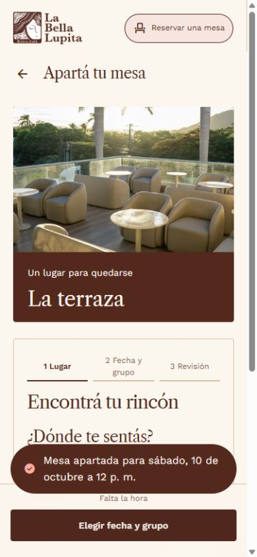
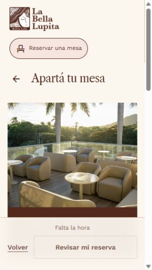

La Bella Lupita · Auditoría integral · 8 de octubre de 2026 · Managua
Reserva una mesa
El alta básica funciona y tiene controles transaccionales útiles. El módulo todavía necesita cerrar la distancia entre registrar una reserva y garantizar una visita que el cliente y el equipo puedan gestionar.
Las prioridades son evitar confirmaciones sin respaldo, proteger el inventario frente al acaparamiento y completar la gestión del depósito VIP. Después conviene corregir la confirmación, la continuidad del flujo, el comportamiento móvil y la operación diaria.
23hallazgos consolidados
3P1 · atender antes de ampliar uso
14P2 · siguiente ciclo
6P3 · optimización y robustez
No se cambió la aplicación ni se ejecutaron reservas, cargos, mensajes o despliegues en producción. Las prioridades son juicio de producto y riesgo, no una puntuación de certificación.
Qué revela la revisión
Lo que conviene conservar
Identidad visual cálida, fotografía del lugar, tipografía coherente y textos habituales con contraste amplio.
Tres pasos, selección visible y revisión antes de confirmar o cobrar.
Disponibilidad del servidor, protección frente a respuestas antiguas y bloqueo cuando falla la consulta.
Reserva y cargo dentro de una transacción; bloqueo de socio y de zona; cálculo del pico simultáneo.
Reintento exacto VIP sin doble cobro; historial persistente y cancelación privada/idempotente de reservas gratuitas.
Controles de horario, duración, anticipación y grupo; API sin caché y sin exposición nominal en ocupación.
La debilidad central
La interfaz termina después del alta. Para una reserva real, la tarea termina cuando existe un comprobante inequívoco, un modo de cambiar o cancelar, una operación que pueda atenderla y un desenlace claro para el dinero.
La capa visual merece ajustes, especialmente en móvil, pero una nueva apariencia por sí sola no resuelve los principales riesgos. El primer trabajo debe ser reforzar los contratos de confirmación y la gestión de inventario y depósitos.
La captura aportada identifica el acceso lateral. Su recorte no permite concluir que toda la pantalla esté vacía. La ruta autenticada sí renderizó el formulario completo en la comprobación local.
Orden de decisión. R01 y R02 son fallos reproducidos técnicamente. R03 es una carencia comprobada del ciclo financiero/operativo de la app y requiere acordar la política real. R11 necesita comprobar mesas y plazas en el restaurante antes de afirmar sobreaforo físico.
Perspectivas cubiertas
Perspectiva
Diagnóstico
Cliente y conversión
Acceso previo a ver disponibilidad; poca información del lugar; cierre ambiguo; VIP remoto sin camino completo cuando falta saldo.
Diseño y marca
Buen lenguaje visual; fotografía excesivamente dominante en pasos operativos móviles; jerarquía y microtexto pueden ser más precisos.
Accesibilidad
Base semántica razonable y buen contraste de texto; foco fuera de vista, estado no anunciado y discordancia entre etiqueta/nombre.
Integridad y seguridad
Transacciones y permisos útiles; falta de límites de negocio por titular y validación de respuestas del cliente.
Operación y dinero
Agenda de lectura; depósito sin resolución completa; sin estados fiables de llegada, ausencia o salida.
Rendimiento y evolución
Compilación correcta; oportunidad de medir y separar rutas, mejorar SQL histórico y centralizar reglas duplicadas.
Privacidad y medición
La ocupación pública es agregada. La reserva toma la identidad de sesión; no requiere duplicar contacto. Faltan métricas de flujo. Retención y tratamiento de futuras preferencias requieren diseño explícito.
Descubrimiento
Ruta pública y metadatos genéricos; no se midieron indexación, campañas o demanda real.
Dos problemas visibles

Éxito sin cierre claro. Cuenta sintética local, viewport 390×844. La reserva sí se guardó, pero el flujo vuelve a pedir datos. Ver el registro recuperado.

El siguiente paso queda fuera de vista. A 320×568, el título que recibe el foco comienza en y643.69 con el desplazamiento en cero. Ver medición.
Las capturas usan el mismo JS y CSS principal que producción, comprobado por SHA256. La cuenta, saldo y base usados en ellas son sintéticos. Esta paridad del cliente no certifica equivalencia del Worker o del esquema remoto.
Hallazgos y criterios de corrección
P1: resolver antes de ampliar el uso o promocionar un compromiso económico incompleto. P2: siguiente ciclo funcional. P3: mejoras de claridad, robustez o rendimiento. Esfuerzo S = acotado; M = varios componentes/contratos; L = flujo de negocio e integración. Son tamaños relativos, no días prometidos.
23 hallazgos visibles
P1R01 · Fiabilidad
Se anuncia una reserva sin validar que exista
Reproducido localmente · Esfuerzo M · Frontend y backend
Una respuesta incompleta por regresión o integración puede hacer que el cliente llegue esperando una mesa inexistente. La inyección reproduce la fragilidad; no demuestra que producción esté devolviendo ese cuerpo.
Evidencia, solución y criterio de aceptación
Evidencia. Al sustituir la respuesta de POST /api/reserva por HTTP 200 con JSON {}, la interfaz muestra «Mesa apartada». La base local tenía cero reservas. datos.tsx:140–160 deja pasar ese contrato y Reservar.tsx:146–164 construye el éxito con el formulario, sin comprobar reserva.id.
Cambio propuesto. Validar el contrato completo y presentar el comprobante canónico del servidor. Ante un resultado incierto, conservar el intento, consultar su estado y permitir un reintento seguro con la misma referencia.
Aceptación. 200 {}, reserva:null, identificador vacío, fechas inválidas y tipos incorrectos nunca anuncian éxito. Una respuesta válida muestra referencia, zona, inicio, fin y personas persistidas. La recuperación no vuelve a cobrar.
Una sola cuenta puede agotar todas las mesas de una zona
Reproducido localmente · Esfuerzo M · Backend y operación
El inventario se puede bloquear sin pagar en zonas gratuitas. La autenticación y los bloqueos transaccionales impiden otros fallos, pero no este uso abusivo del flujo. No se comprobó la configuración WAF remota.
Evidencia, solución y criterio de aceptación
Evidencia. Diez solicitudes sintéticas superpuestas a terraza, separadas por un segundo en su inicio, recibieron 200. Otra cuenta recibió 409 por aforo lleno. No hubo carrera concurrente: los envíos fueron secuenciales. index.ts:1033–1089 protege el aforo global, pero no limita solapes ni reservas activas por titular.
Cambio propuesto. Acordar y aplicar límites por titular y período, prohibición de solapes y excepciones explícitas de grupos. Validarlos dentro de la transacción, junto con limitación de ritmo y trazabilidad. Normalizar segundos por sí solo no basta.
Aceptación. Una cuenta no puede ocupar todo el inventario mediante reservas superpuestas; el reintento exacto no consume otra cuota; cancelar libera su cuota. Excepciones de grupos quedan autorizadas y auditadas.
El depósito VIP se cobra sin un ciclo completo de resolución
Código y reproducción local · Esfuerzo L · Negocio, operación y backend
La app compromete dinero y una visita, pero no explica ni ejecuta su desenlace ante cambios. La revisión dice «se carga» y el éxito «se retuvo». Una atención manual externa puede existir; no fue verificada. No se afirma infracción legal ni pérdida efectiva de fondos.
Evidencia, solución y criterio de aceptación
Evidencia. El catálogo público fija C$500. El Worker registra un consumo de 50000 centavos; la cancelación con depósito devuelve 409 y remite a ayuda. No se encontró acción de reservas para que el personal cambie, cancele, aplique o devuelva ese depósito. Referencias: index.ts:975, 1086–1096; atencion.ts:6–18; MisCompras.tsx:31; equipo/Lecturas.tsx:25–41.
Cambio propuesto. Definir si es anticipo, garantía o tarifa, reglas reales y responsables. Mostrar y versionar la política antes de confirmar; registrar estado del depósito y vínculo al movimiento. Implementar modificación/cancelación y aplicación/devolución idempotentes con auditoría, incluyendo efectos sobre puntos.
Aceptación. El cliente sabe destino y condiciones del importe. Una devolución autorizada repetida produce un solo abono y una sola liberación de mesa. El personal y el comprobante muestran el mismo estado financiero.
Cambiar personas o duración puede recuperar la reserva anterior
Reproducido localmente · Esfuerzo M · Backend y frontend
La prevención de duplicados es útil, pero puede confundirse con aceptación de cambios. El resumen anterior al envío contiene los nuevos parámetros y el éxito no aclara cuál grupo y duración quedaron anotados.
Evidencia, solución y criterio de aceptación
Evidencia. Reservar ventanal para 2 personas y 1 hora, y repetir misma zona/inicio para 12 personas y 6 horas, devuelve 200 y yaEstaba:true conservando 2 personas y 1 hora. La UI no presenta esos datos originales. index.ts:1033–1041 y Reservar.tsx:152–159.
Cambio propuesto. Separar reintento de edición: referencia de intento y huella de contenido, respuesta explícita ante diferencias, detalle de la reserva existente y acción de modificar con control de versión y capacidad.
Aceptación. La misma solicitud conserva ID y cargo único; una solicitud diferente no aparenta haber modificado la visita. El comprobante siempre muestra lo persistido. Evaluar también reintentos tardíos después de cancelar.
El éxito regresa al formulario y vuelve a pedir la hora
Reproducido en navegador local · Esfuerzo M · Producto y frontend
El cierre de la tarea es ambiguo y la superposición ocupa una parte importante del móvil. La reserva sí queda en /compras: el problema es su presentación y recuperación desde el éxito, no ausencia de persistencia.
Evidencia, solución y criterio de aceptación
Evidencia. Tras una creación válida, se borra hora, se vuelve a Lugar y el pie dice «Falta la hora», mientras aparece «Mesa apartada». No hay acción directa a la reserva. El aviso no tiene temporizador: permanece durante el montaje y puede acompañar un intento nuevo. Reservar.tsx:152–164, 410–438; Estados.tsx:284–343.
Cambio propuesto. Sustituir el retorno automático por un estado final con referencia, datos de visita, depósito y acciones «Ver mi reserva» y «Reservar otra mesa». Limpiar confirmación anterior al iniciar otro intento.
Aceptación. Un éxito no coexiste con «Falta la hora». El registro se abre en un toque; inicio, fin, grupo e importe coinciden con el servidor. Refrescar o regresar permite recuperarlo.
La disponibilidad necesita validar su respuesta y recuperarse de conflictos
Código; 503 probado · Esfuerzo M · Frontend y backend
Una consulta antes correcta puede quedar obsoleta y dejar al cliente reintentando un horario ya ocupado. Un mapa ocupacion vacío sí es legítimo para un día sin reservas; debe distinguirse de un campo ausente o una respuesta inválida.
Evidencia, solución y criterio de aceptación
Evidencia. Los cambios de día descartan respuestas antiguas correctamente. Sin embargo, el contrato de /ocupacion no se valida; un cuerpo sin ocupacion puede dibujar horas seleccionables y bloquear el avance. Tras 409 solo se muestra el error, sin refrescar disponibilidad. No hay caducidad ni refresco al recuperar la pestaña. Reservar.tsx:89–102, 114–132, 148–150; datos.tsx:140–160.
Cambio propuesto. Validar día, aforo y mapa disperso; separar carga, fallo, vacío y datos obsoletos. Tras conflicto, actualizar opciones y ofrecer alternativas conservando grupo y fecha. Revalidar al volver a la pestaña y antes de enviar, sin prometer retención de cupo.
Aceptación. 503 bloquea y permite reintento —ya ocurre—; JSON inválido no anuncia disponibilidad; una fecha antigua no reemplaza la actual; un 409 actualiza y guía. Al vencer la antelación de 30 minutos, la hora se invalida y explica.
El VIP sin saldo envía a una recarga presencial y pierde el borrador
Reproducido en navegador local · Esfuerzo M; pago remoto L · Producto, frontend y negocio
Una persona que organiza su visita a distancia no dispone de un recorrido digital completo para VIP sin saldo previo. La salida que propone la app añade trabajo sin resolver el pago en línea.
Evidencia, solución y criterio de aceptación
Evidencia. Con saldo cero, la confirmación se bloquea correctamente por C$500. «Ver mi cuenta y recargar» navega a Inicio; «Recargá» abre «Recargá en el mostrador». Al volver a Reservar se pierden zona, fecha, hora y progreso. Reservar.tsx:66–71,434; Inicio.tsx:206–210.
Cambio propuesto. Avisar del requisito desde la elección de VIP. Guardar borrador por cuenta con caducidad y retorno, revalidando precio/cupo. Según política real, incorporar pago remoto o solicitud asistida pendiente; mientras tanto indicar claramente que la recarga es presencial.
Aceptación. Ir a saldo y volver conserva la selección y reconsulta disponibilidad. No se presenta una solicitud pendiente como confirmada. Cambiar de cuenta nunca revela el borrador anterior.
El cambio de paso lleva el foco fuera de la pantalla
Reproducido y medido · Esfuerzo M · Diseño y frontend
El usuario puede pulsar continuar y seguir viendo casi la misma fotografía, sin ver el nuevo encabezado ni los primeros controles. Es un defecto visual y de orientación demostrado; la clasificación completa de conformidad requiere evaluación de teclado y ayudas técnicas.
Evidencia, solución y criterio de aceptación
Evidencia. A 320×568, al pasar de Lugar a Fecha y grupo, scrollY=0 y el h2 enfocado queda en y643.69–704.16. La barra fija ocupa y456.61–568. La foto y su pie preceden al formulario; cambiarPaso fuerza scroll arriba y focus({preventScroll:true}). Reservar.tsx:135–138. A 390×844 el hero también consume gran parte de la altura.
Cambio propuesto. Contraer o retirar la fotografía de los pasos 2/3, mantener un resumen breve del lugar, enfocar y desplazar el encabezado dentro del área útil. Calcular el espacio inferior según la barra real, especialmente con saldo insuficiente.
Aceptación. El foco y primer control útil se ven al cambiar cada paso en 320×568 y móvil horizontal; no quedan tapados por barras. Verificar zoom nativo y texto ampliado. No basta con ausencia de scroll horizontal.
La carga y el resultado de disponibilidad no se anuncian como estados
Confirmado en código y árbol accesible · Esfuerzo S/M · Frontend y QA accesibilidad
Una persona con lector puede no enterarse de que terminó la consulta o de por qué la hora seleccionada dejó de servir. No se ejecutó NVDA ni VoiceOver en esta revisión.
Evidencia, solución y criterio de aceptación
Evidencia. «Viendo qué hay libre», el conteo y el error de consulta aparecen en un p sin role=status ni aria-live. El bloqueo del CTA no está asociado por descripción al mensaje del pie. El error del envío sí usa role=alert. Reservar.tsx:329–340,398–404,412–432.
Cambio propuesto. Añadir región de estado estable y breve para consulta/conteo/invalidación, aviso de fallo con acción accesible y relación del CTA con el motivo de bloqueo. Evitar narrar toda la rejilla repetidamente.
Aceptación. NVDA/Edge y VoiceOver/Safari anuncian una sola vez carga y resultado, informan del 503 y de la invalidación de hora, y permiten reintentar sin perder selección.
Confirmado en código y árbol accesible · Esfuerzo S · Frontend
Los comandos por voz basados en el rótulo visible pueden no localizar el control. El caso «Volver» no cumple la correspondencia de texto requerida por WCAG 2.5.3.
Evidencia, solución y criterio de aceptación
Evidencia. El botón inferior muestra «Volver», pero usa aria-label="Paso anterior" (Reservar.tsx:424). En el selector, «hoy» tampoco forma parte del nombre largo del día actual. La discordancia principal es verificable sin depender de contraste o de tamaño.
Cambio propuesto. Usar «Volver al paso anterior» como nombre y mantener el texto visible incluido. Nombrar el día actual «Hoy, jueves 8 de octubre» o equivalente dinámico.
Aceptación. El nombre accesible contiene el rótulo visible de cada control textual. Comandos de voz y árbol de accesibilidad identifican los controles coherentemente.
El número de personas no participa en la asignación de capacidad
Modelo confirmado; validar en el local · Esfuerzo L · Operación y backend
El cálculo protege el número de reservas configurado, pero no demuestra que todos los grupos puedan sentarse. No se puede afirmar sobreaforo físico sin conocer mesas y plazas reales. El número 10 de terraza no significa necesariamente diez sillas.
Evidencia, solución y criterio de aceptación
Evidencia. Las zonas se expresan como mesas y el motor cuenta reservas simultáneas. Cada grupo de 1–12 consume una unidad, cualquiera sea su tamaño. No hay mesa física ni capacidad por combinación en el esquema auditado. index.ts:971–975,1013–1014,1058–1076.
Cambio propuesto. Levantar inventario con el restaurante: capacidades, mesas combinables, barra, VIP, tiempos de preparación y espacio reservado a visitas sin cita. Adaptar la consulta a grupo/duración; como mínimo aplicar máximos de grupo por zona comprobados.
Aceptación. Cada combinación ofrecida tiene acomodo operativo válido junto con las demás. Un grupo fuera de rango recibe una alternativa asistida. El inventario real y el digital usan la misma unidad.
La agenda no gestiona el ciclo completo de una visita
Confirmado en esquema y rutas · Esfuerzo L · Operación y backend
Una visita que no llega y una atendida pueden parecer iguales al pasar la hora. El inventario digital no incorpora por sí mismo las decisiones de recepción o de atención telefónica. Reprogramar cancelando primero puede perder ambas oportunidades.
Evidencia, solución y criterio de aceptación
Evidencia. La agenda lista registros; «finalizada» se deduce del fin horario. No hay flujo de mesas para registrar llegada, sentar, salida temprana, ausencia, reserva telefónica o bloqueo especial. Atención responde y cierra mensajes sin modificar reservas. equipo/Lecturas.tsx:25–41; worker/panel.ts:54–63; mostrador.ts:35–45.
Cambio propuesto. Crear acciones y permisos de anfitrión, estados de servicio y cambios versionados con motivo. Unificar reservas digitales/manuales y cierres de zona. Reprogramar atómicamente, validando el nuevo cupo antes de liberar el original.
Aceptación. Dos empleados no pisan cambios; una reprogramación fallida conserva la reserva previa; se distingue atendida de no presentada; lluvia, cierre o bloqueo impiden ofrecer los cupos afectados.
Faltan comprobantes enviados y seguimiento de cambios
Código y avisos locales · Esfuerzo M/L · Backend y operación
Si el cliente cierra la app, no tiene una confirmación enviada desde este flujo. Tampoco hay trazabilidad del recordatorio o del aviso de una modificación. Puede existir comunicación manual ajena a la app, no verificada.
Evidencia, solución y criterio de aceptación
Evidencia. Crear reserva no inserta aviso_cliente ni activa correo de confirmación; cancelar una reserva gratuita sí crea aviso. /compras conserva el registro. El correo revisado sirve para códigos de acceso. No se encontró recordatorio de visita. index.ts:1085–1098; atencion.ts:17; worker/correo.ts.
Cambio propuesto. Comprobante interno al confirmar; después, canal transaccional verificado para creación, cambios y cancelación, con envío deduplicado y registro de fallos. Añadir calendario y recordatorio cuando exista política/canal atendido.
Aceptación. Un mensaje fallido no cancela una mesa válida; reintentar envío no duplica reserva ni mensajes. Los datos y hora de Managua coinciden con el comprobante. No se añaden promociones por defecto.
La consulta queda detrás de un acceso genérico al club
Observado en producción · Esfuerzo M/L · Producto y frontend
El visitante entrega su correo antes de saber si puede venir. Es fricción plausible, no abandono medido. No se exige membresía pagada: no debe confundirse cuenta de acceso con suscripción.
Evidencia, solución y criterio de aceptación
Evidencia. Abrir /reservar sin sesión muestra «Tres generaciones Una taza» y acceso por correo. No explica el propósito de reservar ni ofrece disponibilidad. App.tsx:113–120 aplica Umbral a toda ruta excepto kit. La API agregada de ocupación es pública.
Cambio propuesto. Dar una entrada pública orientada a la visita: disponibilidad, zona, condiciones y grupo antes de verificar identidad; conservar selección durante el acceso y revalidar al confirmar. Decidir si se admite invitado o cuenta.
Aceptación. Una persona sin sesión sabe si hay una opción útil antes de registrarse. El acceso vuelve a su intención y no la obliga a empezar de cero. Medir resultados por cohortes.
El calendario y las reglas comerciales tienen fuentes distintas
Confirmado en código · Esfuerzo M · Negocio y desarrollo
La capacidad técnica de reservar más lejos no es descubrible y futuras modificaciones de horario pueden desalinearse. No hay evidencia de que 14 días o 2 horas por defecto sean la política deseada del restaurante.
Evidencia, solución y criterio de aceptación
Evidencia. La interfaz ofrece hoy y 13 días más, mientras el servidor admite hasta 90 días. Horarios de 7/8 a 21 están escritos en cliente y servidor. La duración 1–6 horas es elegida por el cliente; solo se ofrecen inicios enteros, mientras la API admite otros minutos/segundos. Reservar.tsx:28–30,253,311; index.ts:991–1014.
Cambio propuesto. Centralizar configuración de anticipación, horizonte, turnos, cierre y excepciones. Ofrecer calendario extendido accesible o explicar la ventana acordada. Mostrar hora final y alternativas; decidir si la duración es libre o del servicio.
Aceptación. Cliente y servidor ofrecen/rechazan los mismos límites, incluyendo domingo, cierre, medianoche y fechas especiales. Si la ventana es 90 días, se puede seleccionar el día 15 sin usar la API.
Las pruebas visuales no abarcan todos los estados importantes
Lectura de cobertura existente · Esfuerzo M · QA y desarrollo
Que pase la entrada a Reservar no detecta un foco invisible en revisión, una confirmación falsa ni la salida sin borrador. La presencia de tests en disco tampoco prueba que la versión actual los ejecute en cada publicación.
Evidencia, solución y criterio de aceptación
Evidencia. Existen pruebas valiosas de flujo, intervalos y respuesta VIP perdida con reintento sin doble cargo. Sin embargo, axe y reflujo generales se concentran en el paso inicial; npm test no incluye automáticamente las suites UI. No se verificó una CI externa. tests/ui.mjs:78–95; auditoria-ui.mjs:23–46; accesibilidad-cliente-perfiles.mjs:187–220.
Cambio propuesto. Añadir matriz por pasos y resultados: éxito/repetición/conflicto, saldo, red, contratos inválidos, cambio de cuenta y vencimiento; integrar las suites relevantes al proceso de entrega. Complementar con lectores de pantalla, móvil real y concurrencia PostgreSQL separada.
Aceptación. Cada defecto prioritario tiene una prueba que falla antes del arreglo y pasa después; la publicación registra versión y resultados. No se vende un informe axe como certificado de conformidad.
No hay un embudo específico para diagnosticar reservas
Ausencia en los caminos de código revisados · Esfuerzo M · Producto, datos y backend
No se puede separar abandono voluntario, falta de mesas, fricción de acceso, saldo insuficiente y fallos. Tampoco es válido inferir visitas atendidas a partir de reservas vencidas.
Evidencia, solución y criterio de aceptación
Evidencia. Reservar.tsx no registra eventos de consulta, selección, revisión o resultado. La página publicada tiene beacon de Cloudflare, pero eso no demuestra instrumentación del flujo. La agenda cuenta reservas, sin registro de asistencia que permita calcular ausencias.
Cambio propuesto. Instrumentar transiciones y resultados del servidor con referencias de intento y causas, sin nombres/correos/texto libre. Excluir demo y equipo. Añadir métricas de servicio cuando exista registro real de llegada/salida.
Aceptación. Cada confirmación cuenta una vez; se puede identificar el paso y causa de bloqueo, retorno tras recarga, conflicto y tiempo de atención. Las cifras de asistencia proceden de estados registrados.
Las zonas dicen poco sobre la experiencia que ofrecen
Observado en UI; impacto por validar · Esfuerzo M · Diseño y operación
Es difícil elegir por comodidad, accesibilidad, ruido, interior/exterior o motivo de visita. El número de mesas del local es menos útil que saber si cabe el grupo.
Evidencia, solución y criterio de aceptación
Evidencia. La terraza tiene imagen, pero las otras zonas cambian a una ficha tipográfica. Las opciones describen número de mesas o depósito, sin atributos de acomodo. La elección ocurre antes de conocer día, grupo y hora. Reservar.tsx:173–245.
Cambio propuesto. Validar y publicar características útiles; ofrecer «Cualquier zona» si la operación puede asignar. Considerar fecha/grupo primero y lugar como preferencia. Añadir necesidades opcionales de acomodo, con confirmación humana cuando no se puedan garantizar.
Aceptación. Las descripciones y fotos corresponden al local real; se distingue preferencia de garantía. No se solicitan diagnósticos médicos para pedir un acceso o acomodo.
Observado y confirmado en código · Esfuerzo S/M · Contenido y frontend
El tono cálido pierde precisión justo cuando el usuario necesita decidir. Puede interpretar demanda completa donde hay cierre o confundir un cargo con una retención.
Evidencia, solución y criterio de aceptación
Evidencia. A última hora se muestra «Ese día ya no queda nada» aunque todas las horas sean pasadas, no ocupadas. «Ya pasó» también incluye menos de 30 minutos de anticipación. VIP muestra «1 mesas»; revisión puede decir «1 personas». MisCompras usa el ID de zona en lugar del nombre editorial. Hay oraciones unidas sin puntuación. Los rótulos alternan Reservar, Reservá y Apartá.
Cambio propuesto. Diferenciar cerrado, completo, demasiado pronto, error y selección vencida. Mostrar «Próxima hora disponible» y acción útil. Corregir plurales y puntuación; mantener voseo coherente y una terminología de confirmación alineada con el motor.
Aceptación. Cada estado tiene causa exacta y siguiente paso; plurales 1/2 correctos; el texto no promete devolución ni plazo no acordados. Una hora futura no se denomina pasada.
Una fecha inexistente se convierte silenciosamente en otra
Reproducido localmente · Esfuerzo S · Backend
Un integrador puede confirmar un día distinto del solicitado sin enterarse. Es un defecto de contrato, de menor exposición en la UI actual.
Evidencia, solución y criterio de aceptación
Evidencia. La API acepta 2026-11-31T10:00:00-06:00 y guarda 1 de diciembre. index.ts:991–992 comprueba Date válido, pero no los componentes originales. El selector actual no genera esa fecha: el caso exige API directa o integración defectuosa.
Cambio propuesto. Validar estrictamente fecha y hora con zona explícita antes de normalizar. Definir precisión admitida y rechazar componentes imposibles; reutilizar las reglas de calendario ya existentes cuando corresponda.
Aceptación. 31 de noviembre y 30 de febrero responden 422 sin reserva ni cargo; fechas válidas equivalentes con distinto offset representan el mismo instante.
La ruta comparte un paquete principal amplio y una imagen dominante
Tamaños medidos; impacto pendiente · Esfuerzo M · Frontend y QA
Hay una oportunidad de reducir coste de inicio y trabajo visual en dispositivos modestos, pero estos tamaños por sí solos no prueban lentitud ni justifican un porcentaje de mejora.
Evidencia, solución y criterio de aceptación
Evidencia. Build aislado: JS principal 415.08 kB, 129.27 kB gzip; CSS 73.93 kB, 15.31 kB gzip. Imagen terraza de 960: 159734 bytes; de 480: 50472. Reservar se importa estáticamente en App.tsx:27. No se midieron Core Web Vitals ni red móvil real.
Cambio propuesto. Medir LCP, INP y CLS del recorrido con dispositivo/red representativos; evaluar división de rutas y cargas compartidas. Mantener dimensiones, fuentes locales y srcset. En móvil, reducir el peso visual de la imagen tras elegir zona antes que eliminarla sin criterio.
Aceptación. Presupuesto de carga definido con medición; mejora comprobada sin flashes, pérdida de foco ni errores de carga diferida. No convertir una auditoría local de tamaños en promesa de velocidad.
La consulta de ocupación puede trabajar de más al crecer el historial
Riesgo inferido del SQL · Esfuerzo S/M · Backend y base de datos
La latencia y coste de consulta podrían crecer con registros históricos, especialmente sin cierre operativo de visitas. La magnitud necesita datos y plan de ejecución.
Evidencia, solución y criterio de aceptación
Evidencia. index.ts:1126–1148 expande reservas no canceladas mediante generate_series y filtra el día sobre la serie. No expresa primero un rango de inicio/fin de reserva para el día. La forma de consulta puede procesar histórico innecesario; no se midió un plan real lento.
Cambio propuesto. Comparar EXPLAIN ANALYZE sobre datos sintéticos representativos; acotar por intervalo del día antes de expandir y revisar índices. Conservar cálculo de pico simultáneo y fronteras correctas.
Aceptación. p95 y trabajo del plan se mantienen dentro del presupuesto con volumen acordado. Los resultados coinciden para reservas adyacentes, parciales, canceladas y solapadas.
La ruta no se presenta como una página específica de reservas
Observado en producción y código · Esfuerzo S/M · Producto y contenido
Un enlace compartido a reservar comunica poco contexto y hace más difícil orientar a visitantes nuevos. No se ha medido una pérdida de posicionamiento.
Evidencia, solución y criterio de aceptación
Evidencia. Título y descripción son genéricos de Club Lupita; sin sesión el contenido central presenta sellos, cuenta y carta, no mesas. No se verificó indexación ni ficha comercial del restaurante.
Cambio propuesto. Título por ruta y una entrada pública con identidad, ubicación verificada, horarios/condiciones y CTA específico. Evaluar un enlace de reservas desde la ficha comercial y web principal según elegibilidad, sin publicar integraciones inexistentes.
Aceptación. Compartir /reservar identifica claramente su finalidad; el destino conserva intención al acceder. Datos estructurados o botones externos solo reflejan servicios realmente disponibles.
La ruta no se presenta como una página específica de reservas
S/M
Observado en producción y código
Cómo debería funcionar el recorrido
Propuesta a validar con la operación: partir de la intención de visita y mantener los tres momentos principales —elección, revisión y confirmación—. La preferencia de zona puede preceder o seguir a la fecha según las necesidades reales del local; lo esencial es calcular disponibilidad para el grupo y conservar el contexto.
1. ConsultarFecha, personas y hora. Condiciones visibles. Zona opcional o preferida. Sin exigir cuenta solo para explorar.
2. ElegirOpciones válidas para el grupo; duración o fin claros; alternativas si falta lugar. Datos del espacio comprobados.
3. RevisarIdentificar al titular, resumen, contacto verificado, precio y política. Conservar elección durante acceso/pago.
4. ConfirmarRespuesta validada, ID, estado real y comprobante recuperable. Un error de envío no implica crear otra mesa.
5. GestionarCambiar, cancelar o pedir ayuda vinculada a la reserva. Equipo registra llegada, atención y desenlace del depósito.
Estados que deben distinguirse
ConsultandoSin disponibilidadConsulta fallidaSelección vencidaPendiente de pago o aprobaciónConfirmadaResultado inciertoCanceladaVisita atendida
«Pendiente» solo debe existir si se implementa una solicitud que realmente pueda ser aceptada o rechazada. La interfaz actual confirma directamente al guardar; no conviene cambiar el texto a «solicitud recibida» para esconder una carencia operativa. Reserva, pago y entrega de notificación son estados relacionados pero distintos.
Contenido mínimo del comprobante
Referencia legible, estado, titular, fecha con año, hora local de Nicaragua, inicio y fin, personas, zona y si está garantizada, dirección verificada, importe y estado del depósito, política aplicable, contacto atendido y acciones de gestión. Un evento de calendario debe mantener la zona horaria del restaurante incluso cuando el usuario viaje.
Detalles de diseño
En escritorio, conservar la composición de lugar y formulario; reforzar qué zona está seleccionada y qué paso sigue.
En móvil, presentar la fotografía al elegir y convertirla en un resumen corto después. El nuevo paso debe comenzar dentro del área visible.
Una acción principal por estado. El pie debe decir «Elegí la fecha y la hora» mientras se elige, y dejar de pedir datos tras confirmar.
Usar opciones de selección única consistentes; botones con aria-pressed son utilizables, pero un grupo de radio puede comunicar mejor la exclusividad si se implementa su teclado correctamente.
Mostrar número de personas y hora final en revisión; no depender de tooltips para explicar horarios deshabilitados.
Preservar los buenos contrastes y la preferencia de movimiento reducido. No introducir un rediseño cromático sin necesidad funcional.
Plan de mejora por dependencias
Bloque
Resultado concreto
Hallazgos
Condición para cerrar
Primero: confianza
Confirmación validada, reglas contra acaparamiento y tratamiento explícito de reserva existente. Correcciones pequeñas de nombres/foco pueden ir en paralelo.
R01, R02, R04, R08, R10
Las reproducciones fallidas ya no producen falso éxito, cambio silencioso ni bloqueo de toda una zona por una cuenta.
Segundo: dinero y gestión
Política acordada, acciones autorizadas de cambiar/cancelar/devolver, comprobante y borrador recuperable.
R03, R05, R07, R12
Un caso VIP se resuelve de principio a fin con un único movimiento y agenda coherente.
Tercero: disponibilidad útil
Inventario real, reglas centralizadas, consulta pública, recuperación de conflicto, calendario y accesibilidad de estados.
R06, R09, R11, R14, R15
El grupo encuentra una opción acomodable y conoce cómo recuperarse de falta de cupo o fallo.
Cuarto: seguimiento y optimización
Avisos, métricas, descripciones, entrada compartible, pruebas completas y medición de rendimiento.
R13, R16–R23
Se puede medir conversión y servicio sin datos personales innecesarios; carga y consultas cumplen presupuestos observados.
Instrumentación mínima y pruebas deben acompañar desde el primer bloque. Lista de espera, personalización, más idiomas y pagos remotos son opciones posteriores sujetas a demanda y capacidad operativa, no requisitos que deban añadirse todos a la vez.
Decisiones que el restaurante debe tomar
Qué se confirma: mesa concreta, cupo de zona o solicitud. Cuántas plazas reales y combinaciones admite cada espacio.
Qué significa C$500 del VIP y cómo se aplica/devuelve; reglas de cambios, tardanzas, ausencias y cancelación por la casa.
Cuánto inventario se reserva en línea, máximos por titular/grupo y excepciones autorizadas.
Ventana de 14 o 90 días, duración y precisión de franjas, horarios especiales y protocolo para terraza/lluvia.
Quién gestiona la agenda y por qué canal responde; qué plazo puede cumplir. Cómo entran reservas telefónicas y presenciales.
Si se ofrecerá pago remoto o solicitud asistida; requisitos de cuenta y comunicación transaccional.
Estas decisiones son insumos del trabajo de implementación. No impiden corregir ahora la validación de respuesta, la confirmación falsa, el foco o los nombres accesibles. No se inventaron políticas del negocio en esta auditoría.
Métricas y privacidad
Indicador
Definición propuesta
Interpretación
Finalización de consulta
Reservas únicas confirmadas / sesiones con consulta elegible
Separar nuevo/recurrente, móvil/escritorio y con/sin depósito; no dar una meta sin línea base.
Bloqueo por etapa
Consultas vacías, fallidas, acceso incompleto, saldo insuficiente y conflictos
No llamar fallo técnico a toda salida sin confirmación.
Disponibilidad desactualizada
409 por capacidad / intentos tras mostrar una opción libre
Medir antigüedad de consulta y tiempo hasta resolver.
Continuidad de saldo
Salidas por falta de saldo, retornos y confirmaciones posteriores
Evitar considerar cada salida como ingreso perdido.
Atención efectiva
Tiempo hasta respuesta y hasta modificación/cancelación real
Responder un mensaje no equivale a resolver la reserva.
Ausencias y utilización
No presentadas / visitas esperadas; mesa-horas ocupadas / ofrecidas
Requiere estados de servicio e inventario reales, no reloj vencido.
Fiabilidad
Éxitos, resultados inciertos, reintentos, duplicados, abonos y mensajes fallidos
Confirmar desde el servidor y reconciliar por referencia; evitar doble conteo.
No incluir nombre, correo, teléfono, token ni texto de ayuda en eventos analíticos. Recoger solo preferencias necesarias; una petición de acceso para silla de ruedas no necesita diagnóstico. Limitar lectura y retención de notas, separar consentimiento promocional del servicio y evitar detalles personales en URL o calendario compartido.
El cliente guarda su token en localStorage; esto merece seguimiento como parte de la seguridad transversal de la app, pero no se identificó una vulnerabilidad XSS en este módulo. En producción se observaron CSP, HSTS, protección contra framing y nosniff; son defensas útiles, no prueba de seguridad total. La sesión y el saldo se revalidan, y la API de ocupación muestra agregados sin nombres. No se hizo una conclusión de cumplimiento legal o tributario.
Qué se comprobó y qué falta comprobar
Base de comparación. Entrada activa: index.html → src/casa/main.tsx → App.tsx → src/casa/pantallas/Reservar.tsx. La implementación histórica de src/pantallas/Reservar.tsx no sustenta los defectos del recorrido actual. El bundle local se compiló en una carpeta separada; SHA256 de JS/CSS principal coincide con el publicado.
Comprobación
Resultado
Evidencia
Producción sin sesión
Acceso genérico por correo; catálogo/ocupación públicos legibles; API no-store.
Siete grupos de comprobaciones con esquema real y datos sintéticos en PGlite: autenticación, deduplicación, acaparamiento, fecha inválida, VIP, cancelación privada e idempotente, horario.
En los resultados técnicos, PASS significa que ocurrió lo que describe el caso, incluido reproducir un defecto; no significa que todos los comportamientos sean correctos.
Validación pendiente antes de declarar el módulo listo
Concurrencia PostgreSQL real con conexiones separadas: último cupo, dos cargos del mismo saldo, cancelar/crear simultáneamente y pérdida de conexión antes/después de COMMIT. PGlite secuencial no certifica estas carreras.
NVDA/Edge, VoiceOver/Safari, teclado completo, control por voz, zoom nativo 200/400%, texto ampliado y espaciado. La inspección del árbol no sustituye escuchar un lector.
Safari/Firefox, dispositivos físicos, red lenta/intermitente, retorno de segundo plano, cambio de cuenta y medianoche de Managua.
Capacidad física, autenticidad/representatividad de imágenes, reglas VIP, tiempos de atención y procedimientos manuales del local.
Latencia y Core Web Vitals con datos representativos; plan SQL con histórico; configuración WAF, versión y esquema desplegados.
No se consultaron reservas nominales de producción, no se enviaron correos ni mensajes, no se creó una cuenta real y no se publicó código. La auditoría cubre las perspectivas indicadas con niveles de evidencia explícitos; no es una certificación exhaustiva de infraestructura, accesibilidad o cumplimiento legal.
Fuentes y anexos
Las fuentes externas orientan patrones y criterios; los defectos de La Bella Lupita se sustentan en código y reproducciones propias. No se importaron cifras comerciales de conversión ni políticas ajenas al restaurante.
OWASP API6 2023: abuso de flujos de negocio y agotamiento de reservas. Aplicado a R02.
Google, enlaces de empresas locales: posibilidad de enlazar una ruta de reserva según elegibilidad. No se verificó ni editó la ficha de La Bella Lupita.
Los anexos mantienen sus identificadores de investigación; R01–R23 son los identificadores consolidados de este informe. Sus prioridades resuelven diferencias entre perspectivas: capacidad física queda pendiente de comprobación, mientras el ciclo del depósito se eleva por implicar dinero y operación incompleta.